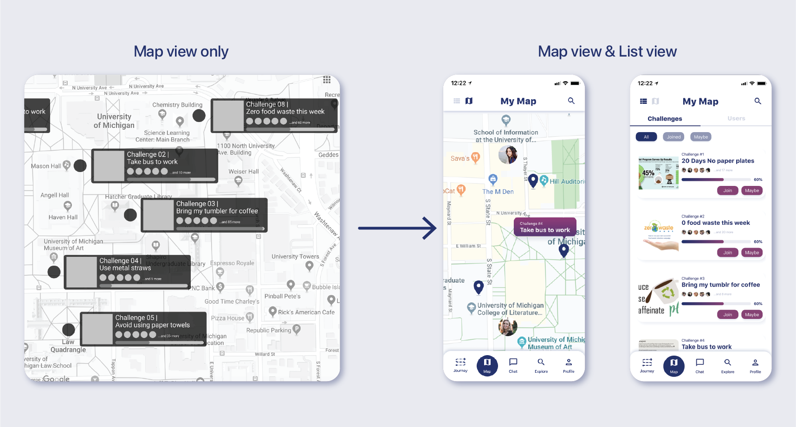
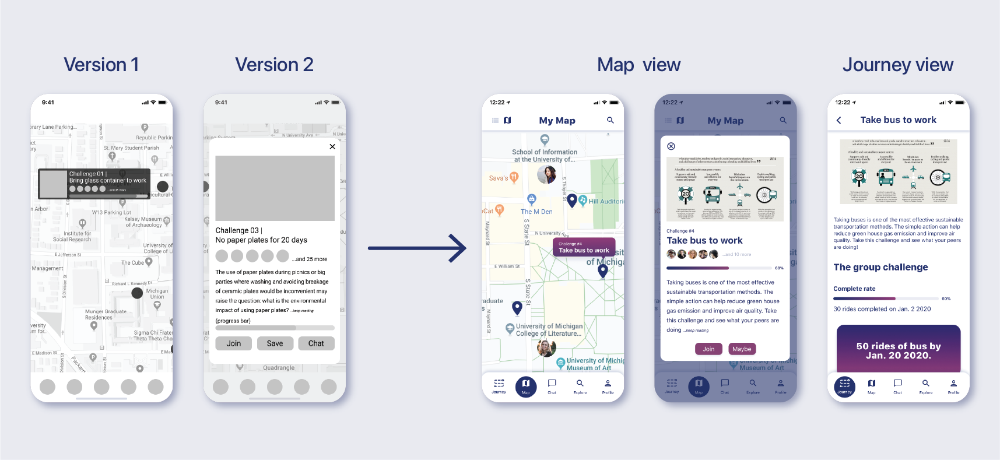

People care about the environment and are eager to contribute by building an eco-friendly lifestyle. However, developing sustainable habits alone is never easy. From 10 in-depth interviews with potential users, we found people feel helpless, lonely, and unmotivated in this journey. Thus, we would like to present a mobile app idea that gamifies traditional habit-forming experiences. Our solution, CHANGE, offers structured steps with tips to help users achieve personal goals, visualizes their achievements in journey maps, and motivates them through team challenges that bring in communities to support them along the way.
Duration
Oct. 2019 ~ Jan. 2020
Type
Side project
submitted to CHI 2020
Team
Hsin-Yu Yang
Joseph Henrichs
My role
Researcher
Designer
{{ project tag }}
Problem
Nowadays, people have become more aware of the need to live a sustainable life. They have been bringing glass containers to work, using tumblers for morning coffee, and taking public transportation to avoid driving. However, developing sustainable habits alone is never an easy task. We found from 10 interviews that people often feel helpless, lonely, and unmotivated during the process. In this study, we present a mobile app CHANGE that gamifies habit-forming experience. CHANGE provides structured steps with informative tips to help users achieve personal goals, visualizes their achievements in journey maps, and motivates them through team challenges that bring in communities to support users through their journeys.
{{ project tag }}
Solution
Local map: connect local users to form a community
With CHANGE, we build a local map to help users to connect to other users, so as to create a sense of belonging. Also, from our user research, we know that users are greatly influenced by the environment and the community, so we try to build this app with a map that can help users to find nearby like-minded people who are also interested in cultivating sustainable habits.

Personal challenge: rewards and reflection to internalize sustainable habits
Apart from group challenges, we also create the section for solo-challenge-takers. In personal challenges, we focus on reflection through self-rating and assessment. Also, to incentivize users, we provide small real-ward rewards to motivate them so that they know their reflection with CHANGE is greatly connected to their daily life.
Group challenge: increase motivation by the sense of collaboration and competition
To increase the sense of community, we want to elevate the process of forming sustainable habits to a crowdsourcing game to not only motivate users to contribute to sustainable actions but also make them feel a sense of honor.
{{ project tag }}
Research
In-depth Interviews
To have a deeper understanding of people’s thoughts on sustainability and their current lifestyles, we interviewed 10 people that represented different stages of life, academic focuses, and cultural backgrounds. The interviewees include 1 Korean, 1 Chinese, 3 Taiwanese, and 5 Americans. All interviewees are between 20-50 years old and are currently living in the USA.
Before conducting the interviews, we developed interview protocols that focused on interviewees’ lunch journeys with three different overarching questions:

We started each interview with a set of general questions inquiring the interviewee’s experience in practicing sustainable habits. According to the response, we made a quick decision to place our interviewee into one of the following groups: people who are unfamiliar with the concept of sustainability and rarely practice sustainable habits (Group A), people who are fully aware and are actively practicing sustainable habits (Group C), and those who are somewhere in-between (Group B). The result led each interviewee to follow-up questions designed for specific groups.
Affinity Wall
After conducting the interviews, we collected insights gathered from the interviewees and created affinity notes on yellow digital post-its during interpretation sessions. To further analyze the qualitative data, we applied the KJ Method. We first clustered post-it notes with similar concepts to larger groups and gave each of them a red post-it with a short summary of the group. We repeated this process several times to build up an affinity wall.

{{ project tag }}
Findings
The affinity wall unfolds the following three deciding factors that have a significant influence on people’s behaviors when they are trying to pursue a more sustainable lifestyle.

{{ project tag }}
Ideation
Considering that our interviewees are mostly in their 20s and 30s, we decided to narrow down the target users of our product to college students and young professionals for they have more control over making decisions on their preferable lifestyles. According to our findings, we set up the following goals that we want our game design to fulfill:
- • Design an intriguing and enlightening experience of habit formation
- • Create a virtual community that motivates users to build sustainable habits together
- • Develop systematic plans that introduce users ways to lead a more environmentally friendly lifestyle
Having the above goals in mind, we brainstormed and did quick sketches to showcase our ideas. From the 15 solutions we came up with, we picked the ones that represent the highest level of entertainment, have the most potential in assisting users to build sustainable habits effectively, and provide platforms to connect users to support each other.


{{ project tag }}
Design
Wireframes

Design Decisions and Iterations
In the stage of constructing wireframes, we created several versions of each interaction. During online meetings, we gave each other feedback and did initial user tests to see which versions our users think would be more intuitive.
From the design critiques I provided by my team and feedback received from micro-usability tests, I modified the display of group challenges and decided to merge personal and group challenges.
Design decision 1: Hover to view a group challenge or view all as a list 
Displaying all challenge cards makes user more thrilled by the popularity of people practicing sustainable habits together. However, if there are more than 4-5 group challenges on users’ screens at the same time, it would be challenging to even see the map that lies in the background. As a compromise, all group challenge location icons stay while the cards show only when users hover over or click on the icons.
Design decision 2: Limit information displayed in Map View and show the entire information later 
Since the size of each challenge card is limited due to the size of the screens, I decided to show partial information such as title of the challenges only. Additionally, because we hope that this mobile application can not only help people build sustainable habits, but also educate them, I proposed to add a short paragraph about concepts behind each act and show progress bars as an incentive to encourage users to contribute in group challenges.
Design decision 3: Merging personal and group challenges

Now that simplified group challenge cards display only when users click on the location icons, the Map page looks a lot cleaner. Thus, after discussing with Hsin-Yu, we agreed to merge personal accomplishment and group challenge icons together so that users do not have to jump between different Map pages.
Final Design
Finally, we merged the two main features “Journey,” and “Map.” The work was then submitted to the CHI 2020 Game Competition in early January. We hope that after conducting several rounds of usability tests and iterating the features accordingly, CHANGE would eventually become a more mature product that invites people to build sustainable habits and together make the world a better place to live for future generations.
Final design that includes CHANGE’s two main features “Journey” and “Map”
{{ project tag }}
What I learned
Go to users to get insights
During the design process, I created a number of different wireframes. None of those is perfect enough to match all criteria in the QOC analysis. Yet, going to potential users and ask for their feedback or even watch how they interact with each version was very helpful. This made the decision making process easier with a more solid ground.
Team building-a crucial step in product management
Since participating in the CHI Game Competition was not a course requirement, people could decide how much effort they would like to devote to the work. In the beginning, the team experienced several times of people not showing up in meetings and left the group without informing others. To solve the problem, I sent messages to people who did not show up to catch up with them. Once people realized that the team valued their participation and looked forward to keep working together, the number of members in the team stopped decreasing, and we could finally work on the project without kept being bothered by people walking away.